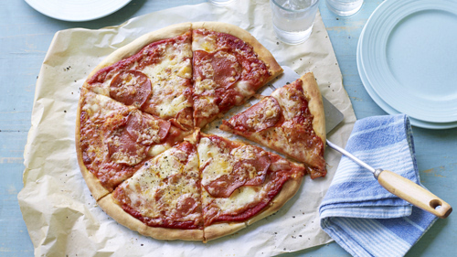
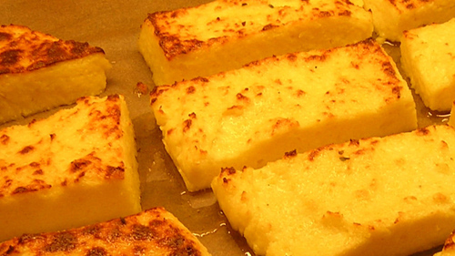
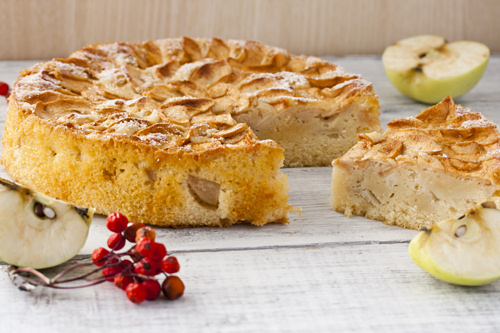
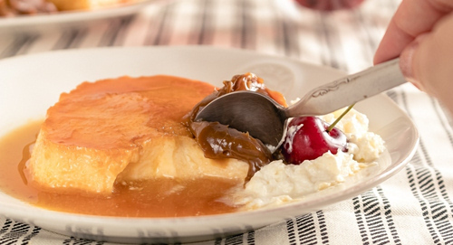
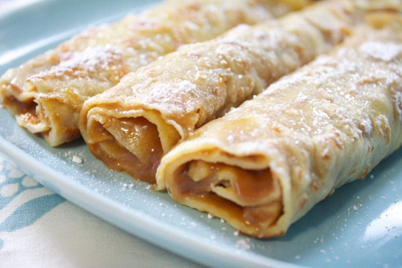

Pizza casera
Ingredientes
- 400 gramos de harina de trigo
- 200 ml de agua tibia
- 2 cucharadas de aceite de oliva
- 15 gramos de levadura fresca
- 1 pizca de sal
- Harina para la encimera (para que no se pegue)
Preparacion
- Para hacer la masa de pizza italiana es muy sencillo. En un bol agregamos el aceite, el agua y la levadura. Mezclamos y seguidamente le añadimos la harina y la pizca de sal. Una vez que tengáis mas o menos mezclado todo en el bol lo pasamos a la encima para amasar bien.
- Ahora comienza el amasado. Ponemos un poco de harina en la encimera y tendremos que amasar como 3 o 4 minutos sin parar. Veremos que hemos terminado cuando la masa esté lisa totalmente, si se pega mucho le ponemos un poco de harina y seguimos hasta que quede lisa.
- Ahora una vez lista, la dejamos reposar durante 1 hora más o menos. Una vez reposada la partimos en dos y podemos hacer dos pizzas muy majas. La amasamos y estiramos. Ponemos lo ingredientes y al horno. Listo!

Volver
Faina de queso
Ingredientes
- 8 cucharadas de harina
- 1 cucharada de polvo para hornear
- Sal y pimienta
- 100 gramos de queso rallado
- 2 huevos
- 1 taza de leche
- 1 taza de agua
- 4 cucharadas de aceite
Preparacion
- Mezclo todos los ingredientes secos, luego hago un hoyo en el centro, coloco los ingredientes liquidos y mezlo todo.
- Luego aceito el molde 20 cm de diametro y vuelco la preparacion.
- Espolvoreo con queso rallado y llevo al horno hasta que este dorado.

Volver
Torta de manzana
Ingredientes
- 110 g de harina
- ? de polvo de hornear
- 2 huevos + 1 yema
- 250 g de azúcar
- 1 cucharadita de aroma de vainilla
- 125 g de mantequilla
- 3 manzanas grandes peladas y cortadas en rodajas
- 1 cucharadita de ralladura de limón
- Una pizca de sal
Preparacion
- Pelamos y cortamos las manzanas en rodajas finas. Precalentar el horno a 200 grados y forramos un molde con papel de horno.
- En una sartén anade la mitad de la mantequilla a fuego lento hasta que se vaya fundiendo, anadimos las manzanas y cocinamos a fuego lento diez minutos hasta que las manzanas estén tiernas, luego apagamos el fuego y reservamos.
- Con un colador tamizamos la harina y la combinamos con el polvo de hornear y la pizca de sal.
- En otro recipiente batimos los huevos y la yema como para tortilla, anade la mitad de la mantequilla derretida (si hace falta la introduces en el microondas para ablandarla). También anade el azúcar y la vainilla y la ralladura de limón.
- Mezclar todo y combinar con las manzanas y la mantequilla que reservamos al principio. Verter la mezcla en el molde forrado con papel de horno.
- Hornear durante 35 minutos a 180 grados. Transcurrido el tiempo, sacamos el molde del horno, lo retiramos del molde (no costará mucho al tener papel de horno), le damos la vuelta y lo horneamos por el otro lado 5 minutos.

Volver
Flan
Ingredientes
- 4 huevos
- 1/2 litro de leche
- 100 gramos de azúcar
- 1 cucharadita de vainilla
Preparacion
- En un bowl grande integrá el azúcar con los huevos, rompelos de a uno en otro recipiente para no arruinar todo si alguno está malo.
- Integrá la leche y el extracto, hacelo con batidor de alambre. No batas demasiado si no querés agujeritos.
- Volcalo en el molde y concina a fuego lento. Tarda por lo menos 40 minutos. Te das cuenta de que está porque al moverlo se mueve solo un poco en el centro.
- Hay que dejarlo entibiar a temperatura ambiente y luego en heladera por 4 horas mínimo. Y pronto.

Volver
Panqueques
Ingredientes
- 2 huevos
- 1 taza de harina
- 1 taza de leche
- 1 cucharadita de aceite
- 1 pizca de sal
- Dulce de leche
Preparacion
- Para comenzar nuestra receta de panqueques debemos poner la leche junto a los huevos en una licuadora.
- Luego, debemos vaciar la mezcla obtenida en un bowl, anadir la harina, la cucharadita de aceite y mezclar bien.
- El siguiente paso es calentar un poco de aceite en un sartén (ojalá de teflón) y cubrir con nuestra mezcla toda la superficie, dorar por ambos lados*, retirar y dejar enfriar.
- Así, cuando ya terminamos de preparar toda la mezcla, podemos comenzar a rellenar los panqueques. Para hacerlo, debes agregar la cantidad de manjar que desees y enrollar.
- Finalmente puedes decorar de dos formas: espolvoreando los panqueques con azúcar flor o disolviendo con leche un poco de dulce de leche para trazar líneas sobre los panqueques

Volver